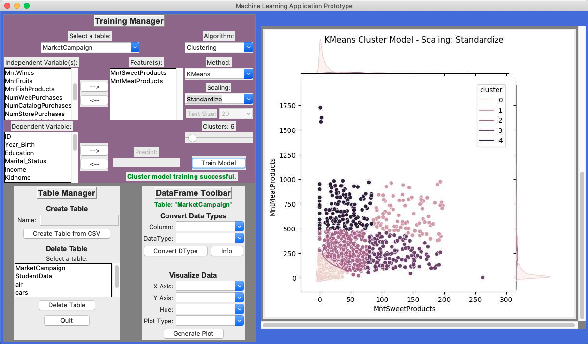
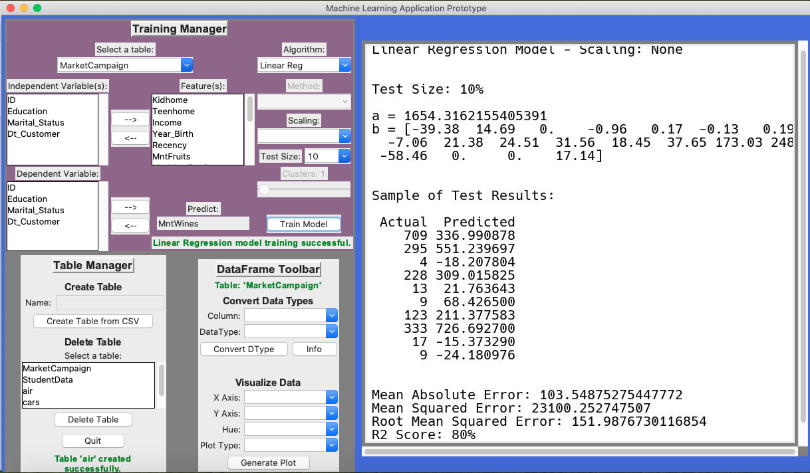
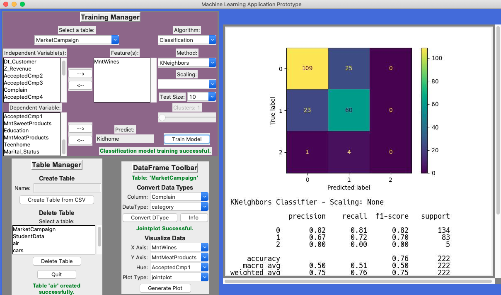
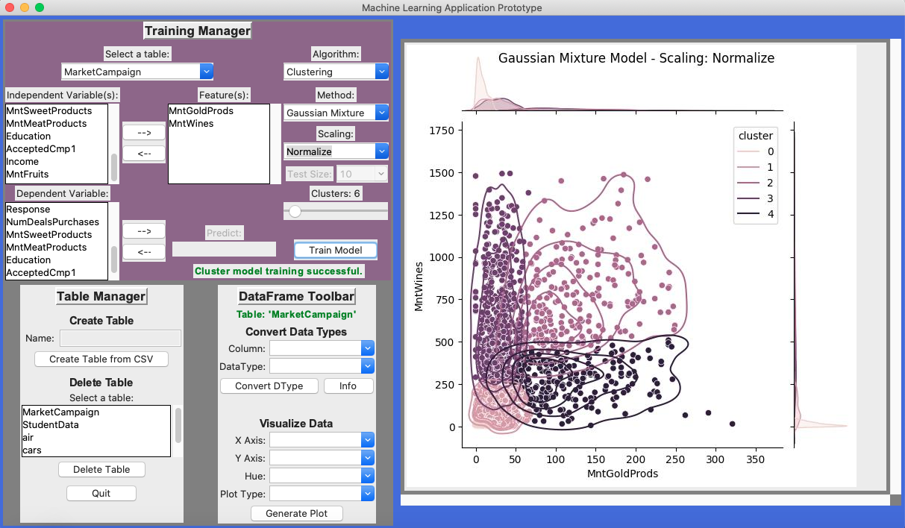

View software video walkthrough
1 Project Overview
1.1 Purpose of Document
The purpose of this document is to provide a business case to assist ACME Inc in evaluating the viability and profitability of the proposed project. It details estimates on functions/activities, cost of development, costs of running and hardware/network requirements in developing and maintaining a machine learning software for ACME Inc.
1.2 Scope
Scope can be split into three parts: (1) development of machine learning software, (2) setup and deployment of data pipeline for feeding to the software and (3) maintaining the solution for sustained future company use. This proposed solution does not include training staff on machine learning software after deployment but can be negotiated.
2 Executive Summary
2.1 Background
ACME Inc is increasingly accumulating data on the customers that interact with the company. As the company grows, profits have not been increasing in proportion to the rising costs of larger infrastructure to support growth. At the same time marketing is struggling to identify where their efforts are most effective as the customer base widens along with product lines. The proposed project provides a solution to these problems by making use of the ever growing asset the company possesses, customer data.
See 5 Preliminary Findings of this document to investigate some of the initial insights that the prototype software has been able to uncover.
2.2 Objectives
2.2.1 Improve ACME’s data hygiene so that its data is better utilized.
2.2.2 Produce new actionable insights with company data which can be used to benefit ACME.
2.2.3 Provide concrete targets for future marketing campaigns.
2.2.4 Increase company profits.
3 Analysis
3.1 Functions/Activities
A centralized database server will need to be securely setup for data to be loaded into for the software to access. The database server will require at least one (1) database admin to deploy and maintain. Software development itself will require three (3) phases: (1) Program, system, operations and user planning/design/documentation. (2) Development of software based on designs and deployment. (3) Maintenance of software with scheduled patches, updates and new features. To successfully execute the software development portions staff required are as follows… one (1) project manager, two (2) designers, one (1) UI developer and one (2) machine learning engineers. In the maintenance stage, staff can be reduced to just one (1) manager, one (1) database admin, one (1) developer and (1) machine learning engineer.
3.2 Cost of Development
| 3.2.1 | One (1) project manager – 3 months | £25,000 |
| 3.2.2 | Two (2) designers – 1 month | £10,000 |
| 3.2.3 | One (1) UI developer – 1 month | £5,000 |
| 3.2.4 | One (1) database admin – 2 weeks | £2,500 |
| 3.2.5 | Two (2) machine learning engineers – 2 months | £30,000 |
| TOTAL | £72,500 |
3.3 Cost of Running
| 3.3.1 | One (1) manager – 3 months | £100,000/year |
| 3.3.2 | One (1) database admin - retainer | £10,000/year |
| 3.3.3 | One (1) developer | £60,000/year |
| 3.3.4 | One (1) machine learning engineer | £90,000/year |
| TOTAL | £260,000/year |
3.4 Hardware/Network Costs
Database deployment and software development can be achieved using the company’s current infrastructure and hardware available.
4 Software Prototype
4.1 Database Implementation
Prototype database has been setup using a free tier Oracle Standard.A1.Flex virtual machine instance(1 CPU, 6GB RAM, Ubuntu 22.04). A MariaDB server has been installed on the instance with a user account created for the software to access the server directly. Mysql.connector and SQLAlchemy python libraries are used by the prototype software to create, delete, and access tables in the server. The prototype software allows the user to open any CSV file and to create a table on the server to import the CSV data into.
4.2 Data Cleaning and Exploration
Once a user has selected a table using the “Training Manager” toolbar, the table data is converted in a Pandas data frame for cleaning, exploration and model training. In the “DataFrame” toolbar the user is able to convert columns in the data frame to different data types in preparation for training. The user can also display the current data frame information and head data by using the “Info” button on the “DataFrame” toolbar. In addition, the user can can explore the data by generating plots using the “DataFrame” toolbar. Finally, rows with NaN values are dropped from the data frame when the user clicks the “Train Model” button so that the data fed into the algorithms doesn’t produce errors.
4.3 Training Models
Once a user has selected a table using the “Training Manager” toolbar, they can then select columns that they want to use to train models by using the arrow buttons. The user can select whether they want to train a linear regression, classification or clustering model using the “Algorithm” combobox. If either classification or clustering options are chosen they the user can further choose the method for training whether it be: (1) KNeighbors or Decision Tree for classification, or (2) KMeans, Gaussian Mixture, or Spectral Clustering for clustering. User is able to Standardize or Normalize the data for training by making a selection using the “Scaling” combobox. Linear regression or classification models train starting at the test size selected by the user and decrement down by 10 until a test size of 10 has finally been trained. Clustering models train classify clusters based on how many clusters are set by the “Cluster” slider. All training results are displayed for the user in the view window.
5 Preliminary Findings
Using the prototype software developed to demonstrate the benefits of this project, customer data has been explored. Some preliminary findings have been discovered and are detailed in the items below…
5.1 Predict Wine Purchases
Using a multivariate linear regression model trained on current company data the amount of wine a given customer will purchase can be predicted with 80% accuracy. This insight could be used to direct specific marketing campaigns and extend wine deals towards customers who are likely to buy more wine based on the model’s predictions. ( See Figure 1 )

5.2 Relationship Between Kids & Wine
Using a KNeighbors classification model trained on company data it is clear to see that there is a partial relationship between the amount of wine bought and how many kids are in the home. It seems that as the amount of children in the home goes up that less wine is purchased. With this insight in mind, marketing should spend less resources advertising wine towards households that have children. ( See Figure 2 )

5.3 Relationship Between Meats & Sweets
Using a KMeans clustering model trained on standardized company data, customers habits can be established between meats and sweets. As seen in Figure 3 customers could be placed in certain categories based on their meats and sweets purchases that would define where marketing efforts may best be spent. For example, those that buy a high amount of meats fit into a category of customer that doesn’t purchase as much sweets and visa versa. So if a customer fits into a category of high meat purchases then less efforts may be spent towards selling them sweets. ( See Figure 3 )
5.4 Relationship Between Gold & Wine
Using a Gaussian Mixture clustering model trained on normalized company data, customers habits can be established between gold and wine. As seen in Figure 4 it seems that customers who purchase less gold products tend to buy more wine but not the other way around. Knowing this, marketing on wine products should not be emphasized for customers that already purchase high amounts of gold products. ( See Figure 4 )

6 Conclusions
The prototype software has already unearthed some intriguing lines of investigation and it it still extremely limited in what algorithms and methods it has available. With proper development of a full fledged machine learning software solution there is no doubt that ACME Inc will be able to derive considerable value from its existing and future data. Having a much better understanding of its data, ACME Inc. will be in a much better position to make decisions that affect its future.